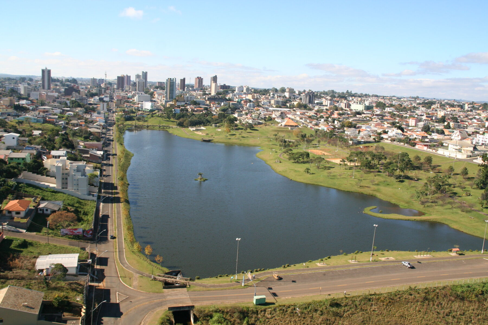

Guarapuava é um importante polo regional no Centro-Sul do Paraná, localizado a 256 km de Curitiba. Conhecida como a "Capital do Malte" e "Pérola do Oeste", a cidade destaca-se pelo agronegócio forte, clima frio, áreas verdes e uma excelente qualidade de vida.
